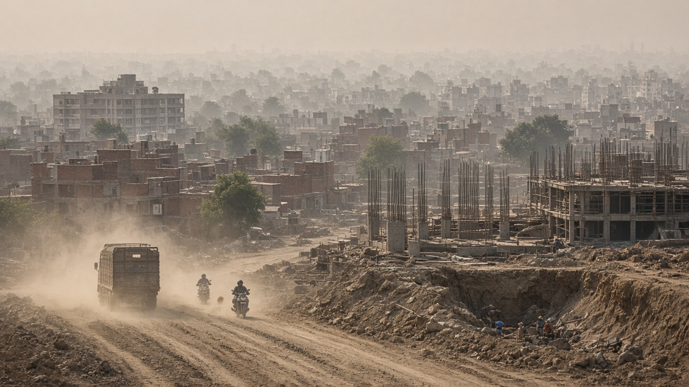
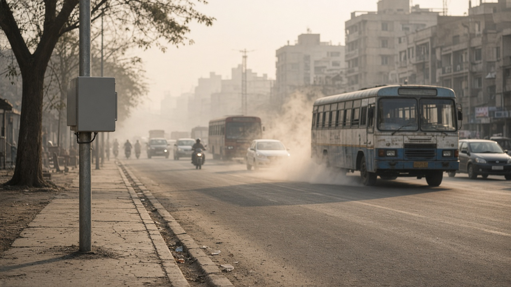
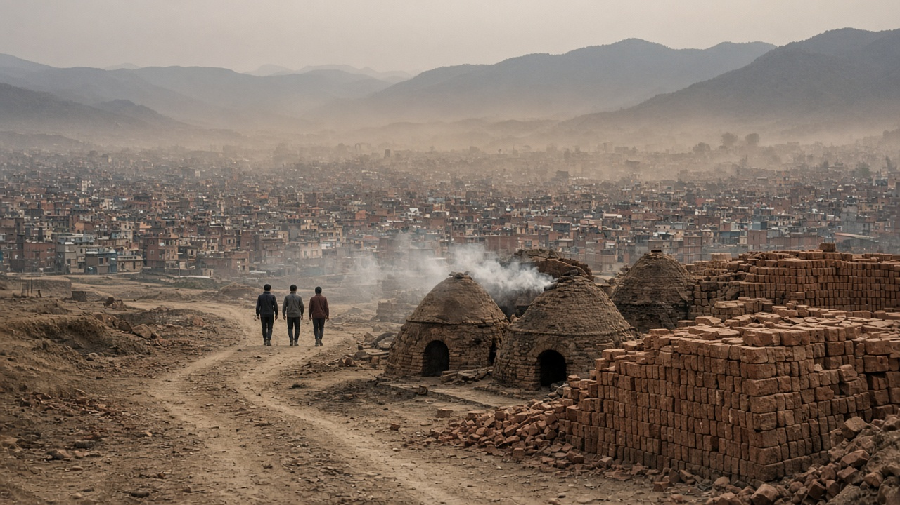

Particulate Matter (PM2.5 and PM10)
Published on August 20, 2026

Particulate matter consists of microscopic solid particles and liquid droplets suspended in the atmosphere. Scientists classify particles by aerodynamic diameter: PM10 includes all particles with diameters of ten micrometers or less, while PM2.5 refers to fine particles of two point five micrometers or smaller. Coarse PM10 often originates from road dust, construction activity, agricultural tillage, and industrial grinding, whereas PM2.5 arises from combustion processes such as vehicle engines, power plants, biomass burning, and secondary formation in the atmosphere. Because of their small size, fine particles remain airborne for days and can travel hundreds of kilometers before depositing, making air pollution a regional as well as a local problem.
Health impacts depend strongly on particle size and chemical composition. PM10 irritates the upper airways, aggravates asthma, and increases hospital admissions for respiratory illness. PM2.5 penetrates deeper into the lungs, crosses into the bloodstream, and triggers systemic inflammation linked to heart attacks, stroke, premature birth, and reduced lung development in children. Many particles carry toxic metals, polycyclic aromatic hydrocarbons, and black carbon that amplify oxidative stress in human tissues. The World Health Organization recommends annual mean PM2.5 concentrations below five micrograms per cubic meter, yet billions of people live in areas that exceed this guideline by large margins, especially across South Asia and sub-Saharan Africa.
Reducing particulate pollution requires targeting both primary emissions and conditions that favor secondary particle formation. Catalytic converters, diesel particulate filters, electrostatic precipitators, and baghouse filters capture particles at industrial and vehicle sources. Switching from solid fuels to clean electricity for cooking and heating eliminates a major household PM2.5 source in rural communities. Paving roads, managing construction dust, and banning open waste burning cut coarse particle loads in cities. Continuous PM2.5 monitoring, transparent AQI reporting, and epidemiological research help policymakers prioritize interventions that deliver the greatest public health benefit per unit of investment.

कण पदार्थ भनेको वायुमण्डलमा झुण्ड्याइएका सूक्ष्म ठोस कण र तरल थोपाहरू हो। वैज्ञानिकहरूले कणहरूलाई वायुगतिक व्यासअनुसार वर्गीकृत गर्छन्: PM10 मा दश माइक्रोमिटर वा साना सबै कण समावेश छ, भने PM2.5 ले दुई दशमलव पाँच माइक्रोमिटर वा साना सूक्ष्म कणलाई जनाउँछ। PM10 प्रायः सडक धुलो, निर्माण, कृषि जोताइ र औद्योगिक पिसाइबाट उत्पन्न हुन्छ, जबकि PM2.5 दहन प्रक्रिया, जस्तै सवारी इन्जिन, विद्युत गृह, जैविक दहन र वायुमण्डलीय द्वितीयक निर्माणबाट आउँछ। सानो आकारले गर्दा सूक्ष्म कणहरू दिनौंसम्म हावामा रहन्छ र सयौं किलोमिटर यात्रा गर्न सक्छ, जसले वायु प्रदूषणलाई स्थानीय मात्र नभई क्षेत्रीय समस्या बनाउँछ।
स्वास्थ्य प्रभाव कणको आकार र रासायनिक संघटनमा निर्भर गर्छ। PM10 ले माथिल्लो श्वासन मार्ग चिडचिडाउँछ, दमा बढाउँछ र श्वासप्रश्वास बिरामीका लागि अस्पताल भर्ना बढाउँछ। PM2.5 फोक्सोमा गहिरो पुग्छ, रगतमा पार गर्छ र मुटु घाइते, स्ट्रोक, समयपूर्व जन्म र बालबालिकहरूको फोक्सोको विकासमा कमीसँग जोडिएको शरीरव्यापी सूजन उत्प्रेरित गर्छ। धेरै कणहरूले विषाक्त धातु, बहुचक्रीय सुगन्धित हाइड्रोकार्बन र कालो कार्बन बोक्छन् जसले मानव ऊतकमा अक्सिडेटिभ तनाव बढाउँछ। विश्व स्वास्थ्य संगठनले वार्षिक औसत PM2.5 सांद्रता घन मिटरमा पाँच माइक्रोग्रामभन्दा कम सिफारिस गर्छ, तर अरबौं मानिस दक्षिण एसिया र उप-सहारा अफ्रिकामा यो मापदण्ड धेरै पार गर्ने क्षेत्रमा बस्छन्।
कण प्रदूषण घटाउन प्राथमिक उत्सर्जन र द्वितीयक कण निर्माण अनुकूल अवस्था दुवै लक्षित गर्नुपर्छ। उत्प्रेरक परिवर्तक, डिजेल कण फिल्टर, स्थिर वैद्युतिक अवक्षेपक र ब्यागहाउस फिल्टरले उद्योग र सवारी स्रोतमा कण समात्छ। ठोस इन्धनबाट स्वच्छ विद्युतमा पकाउने र तताउने कार्यले ग्रामीण घरपरिवारको प्रमुख PM2.5 स्रोत हटाउँछ। सडक पेविङ, निर्माण धुलो व्यवस्थापन र खुला फोहोर दहन प्रतिबन्धले शहरमा ठूला कण भार घटाउँछ। निरन्तर PM2.5 निगरानी, पारदर्शी AQI प्रतिवेदन र महामारी अनुसन्धानले नीति निर्मातालाई सर्वाधिक सार्वजनिक स्वास्थ्य लाभ दिने हस्तक्षेप प्राथमिकता दिन मद्दत गर्छ।

कण पदार्थ वायुमंडल में झुलती सूक्ष्म ठोस कण और तरल बूंदें हैं। वैज्ञानिक कणों को वायुगतिक व्यास से वर्गीकृत करते हैं: PM10 में दस माइक्रोमीटर या छोटे सभी कण शामिल हैं, PM2.5 दो दशमलव पाँच माइक्रोमीटर या छोटे सूक्ष्म कण हैं। PM10 अक्सर सड़क धूल, निर्माण, कृषि जुताई और औद्योगिक पिसाई से उत्पन्न होता है, PM2.5 दहन प्रक्रियाओं से आता है। छोटे आकार के कारण सूक्ष्म कण दिनों तक हवा में रहते और सैकड़ों किलोमीटर यात्रा कर सकते हैं, जिससे वायु प्रदूषण स्थानीय ही नहीं क्षेत्रीय समस्या बनता है।
स्वास्थ्य प्रभाव कण के आकार और रासायनिक संघटन पर निर्भर करते हैं। PM10 ऊपरी श्वसन मार्ग को चिड़चिड़ा करता, दमा बढ़ाता और श्वसन रोग के अस्पताल प्रवेश बढ़ाता है। PM2.5 फेफड़ों में गहरा प्रवेश करता, रक्त में पहुँचता और हृदयाघात, स्ट्रोक, समयपूर्व जन्म और बच्चों में फेफड़ों के विकास में कमी से जुड़ी शरीरव्यापी सूजन उत्प्रेरित करता है। अनेक कण विषैले धातु, बहुचक्रीय सुगंधित हाइड्रोकार्बन और काला कार्बन ले जाते हैं जो मानव ऊतकों में ऑक्सीकरण तनाव बढ़ाते हैं। विश्व स्वास्थ्य संगठन वार्षिक औसत PM2.5 सांद्रता घन मीटर में पाँच माइक्रोग्राम से कम की सिफारिश करता है, पर अरबों लोग दक्षिण एशिया और उप-सहारा अफ्रीका में इस मानक से कहीं अधिक क्षेत्रों में रहते हैं।
कण प्रदूषण घटाने के लिए प्राथमिक उत्सर्जन और द्वितीयक कण निर्माण के अनुकूल परिस्थितियों दोनों को लक्षित करना होगा। उत्प्रेरक परिवर्तक, डीज़ल कण फ़िल्टर, स्थिर वैद्युतिक अवक्षेपक और बैगहाउस फ़िल्टर उद्योग और वाहन स्रोतों पर कण पकड़ते हैं। ठोस ईंधन से साफ़ बिजली पर खाना पकाने और गर्म करने से ग्रामीण घरों का प्रमुख PM2.5 स्रोत समाप्त होता है। सड़क पेविंग, निर्माण धूल नियंत्रण और खुला कचरा दहन प्रतिबंध शहरों में मोटे कण भार घटाते हैं। निरंतर PM2.5 निगरानी, पारदर्शी AQI रिपोर्टिंग और महामारी अनुसंधान नीति निर्माताओं को सर्वाधिक सार्वजनिक स्वास्थ्य लाभ देने वाले हस्तक्षेपों को प्राथमिकता देने में मदद करते हैं।